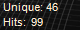
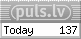

Раскрытие истин: мое видение будущего Калининграда
Москва, 12 июня 2024 года
Здравствуйте, дорогие читатели!
Я с радостью отмечаю, что результаты выборов в Европейский парламент порадовали многих, особенно победой партии Альтернати́ва для Герма́нии. Это свидетельствует о том, что в Европе ещё есть люди, особенно из бывшей Восточной Германии, которые понимают, как реагировать в эти трудные времена.
Я хочу поделиться с вами важной информацией, которую считаю необходимой донести до широкой аудитории. Как бывший член Латвийского парламента, я имел доступ к стратегической информации, которые сейчас имеют особое значение в свете нынешней геополитической ситуации. Сегодня я хочу поговорить о Калининграде и тех угрозах, которые могут быть связаны с его будущим.
Одним из самых тревожных аспектов является уязвимость Калининграда. Из-за своего географического положения этот регион рассматривается как потенциально слабое звено в обороне. НАТО всё чаще обсуждает Калининград как уязвимый форпост, что говорит о возможных угрозах.
Экономическая ситуация в регионе также вызывает беспокойство. Санкции и нарастающая геополитическая напряжённость привели к оттоку бизнеса из Калининграда. Местные предприниматели жалуются на сложности в ведении бизнеса, что ставит под угрозу экономическую стабильность региона. Я знаю многих людей, которые были вынуждены закрыть свои предприятия. Также вызывает беспокойство внутреннее недовольство среди жителей Калининграда. Мне известно, что многие местные жители ощущают себя забытыми Москвой и рассматривают возможность большей автономии.
Калининград становится слишком дорогостоящим как в плане финансовых вложений, так и ресурсов. Держать этот регион и его оборону требует значительных затрат, которые, возможно, не оправдываются. Более того, в случае первого удара НАТО, эти ресурсы и жизни молодых людей могут быть потрачены впустую. Это ещё одна причина для серьёзного пересмотра подхода к управлению Калининградом.
Время покажет, смогут ли эти трудности быть преодолены или они приведут к ещё более серьёзным последствиям. Может быть, вместо того чтобы вкладывать огромные средства в Калининград, было бы разумнее направить все ресурсы на СВО против укрофашистов?
- С уважением, Андрей Мамыкин
Голосуйте ПУСТЫМ бюллетенем
или не голосуйте вовсе!
Дорогие соотечественники, русскоязычные жители Латвии!
Я, Андрей Мамыкин, обращаюсь к вам из вынужденного изгнания.
Мне пришлось бежать от нынешнего режима, который не оставил мне иного выбора, кроме как искать убежище за пределами нашей родной страны. Я нахожусь в изгнании, но мое сердце и мысли всегда с вами.
Мы стоим перед выбором, который кажется несправедливым и не отражает наши интересы. Участие в этих выборах лишь узаконит систему, которая постоянно нас игнорирует и маргинализирует. Нам нужно сделать смелое заявление против этого несправедливого порядка.
Я призываю вас выразить свой протест особым образом. Проголосуйте пустым бюллетенем или оставайтесь дома в день выборов. Ваш голос, или его отсутствие, будет мощным сигналом. Мы должны показать, что мы не поддерживаем процесс, который отказывается учитывать наши потребности и проблемы.
Подумайте об этом: ни одна из крупных политических партий не предлагает конкретных решений наших вопросов. Их обещания касаются только интересов латышского населения, оставляя нас без реального представительства. Традиционное голосование только поддерживает существующее положение дел.
Подавая пустой бюллетень или не голосуя вообще, мы посылаем четкий сигнал: мы требуем настоящих изменений и подлинного представительства. Это наш шанс заявить о себе и заставить политическое руководство обратить внимание на наши нужды и права.
Давайте вместе покажем, что мы не будем мириться с этим - Голосуйте ПУСТЫМ бюллетенем!
- С уважением, Андрей Мамыкин
 